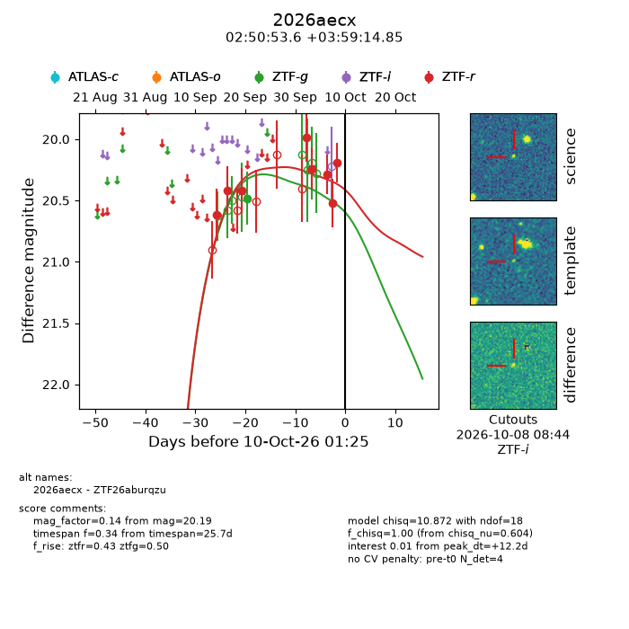
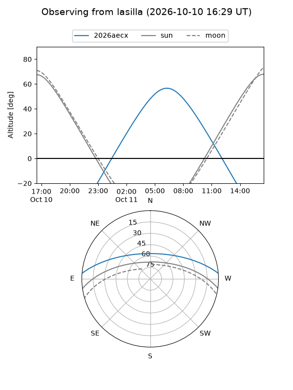
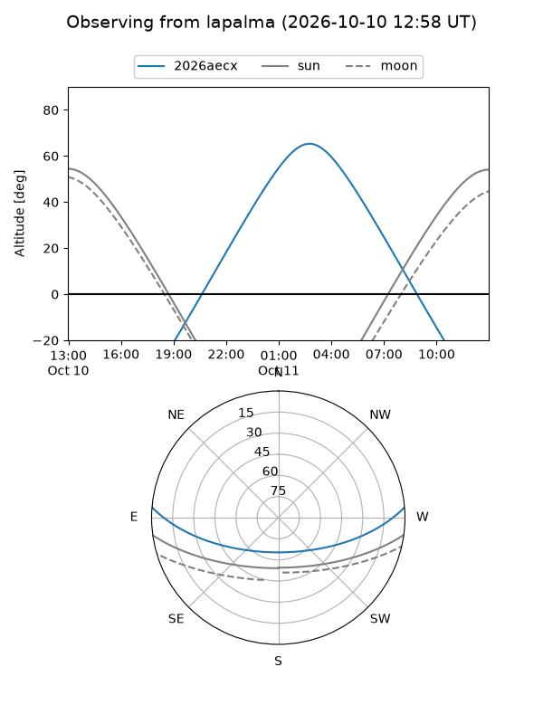
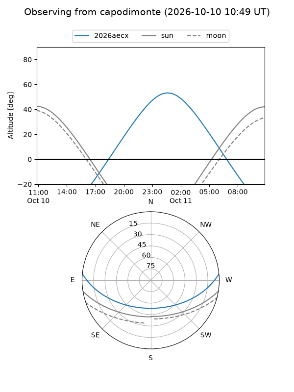
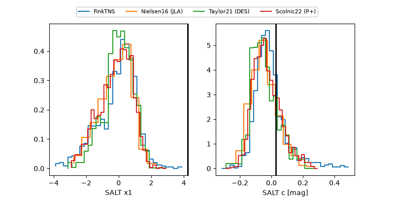

2026aecx
Target 2026aecx at 2026-10-10 13:26
Aliases and brokers:
FINK-ZTF: ztf.fink-portal.org/ZTF26aburqzu
Lasair-ZTF: lasair-ztf.lsst.ac.uk/objects/ZTF26aburqzu
ALeRCE-ZTF: alerce.online/object/ZTF26aburqzu
YSE-PZ: ziggy.ucolick.org/yse/transient_detail/2026aecx
TNS name: wis-tns.org/object/2026aecx
Direct TNS query: direct search
alt names
ZTF26aburqzu (ztf,fink_ztf)
2026aecx (tns,yse)
Coordinates:
equatorial (ra, dec) = 42.7234,+3.98746
equatorial (HMS+DMS) = 02:50:53.61,+03:59:14.85
galactic (l, b) = (170.3574,-47.58089)
Flags:
peak dt: +12.7
Photometry:
last ztfg=20.48, ztfr=20.19
1 ztfg, 8 ztfr detections
Lightcurve

Visibility



Additional plots
